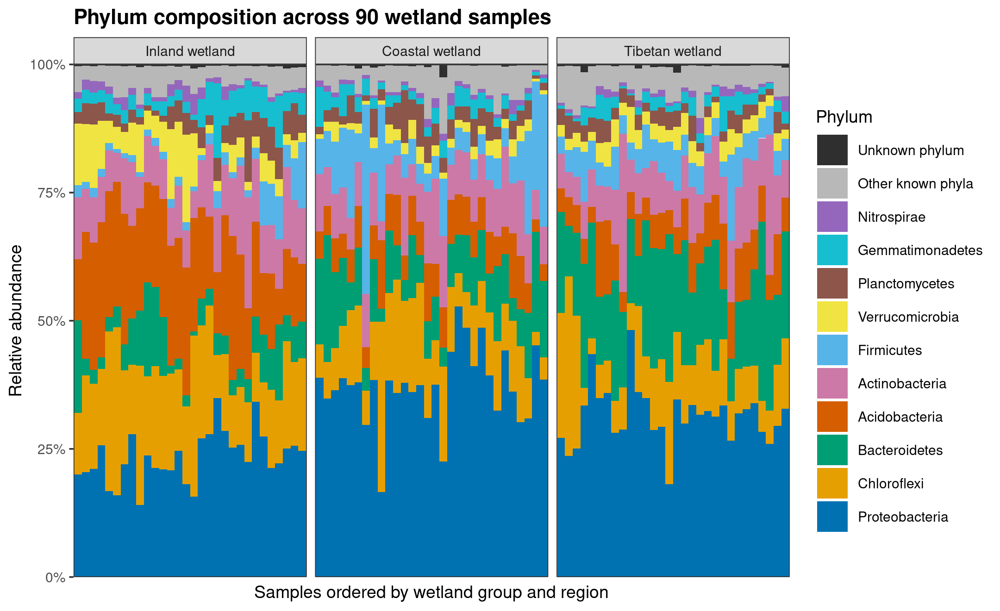
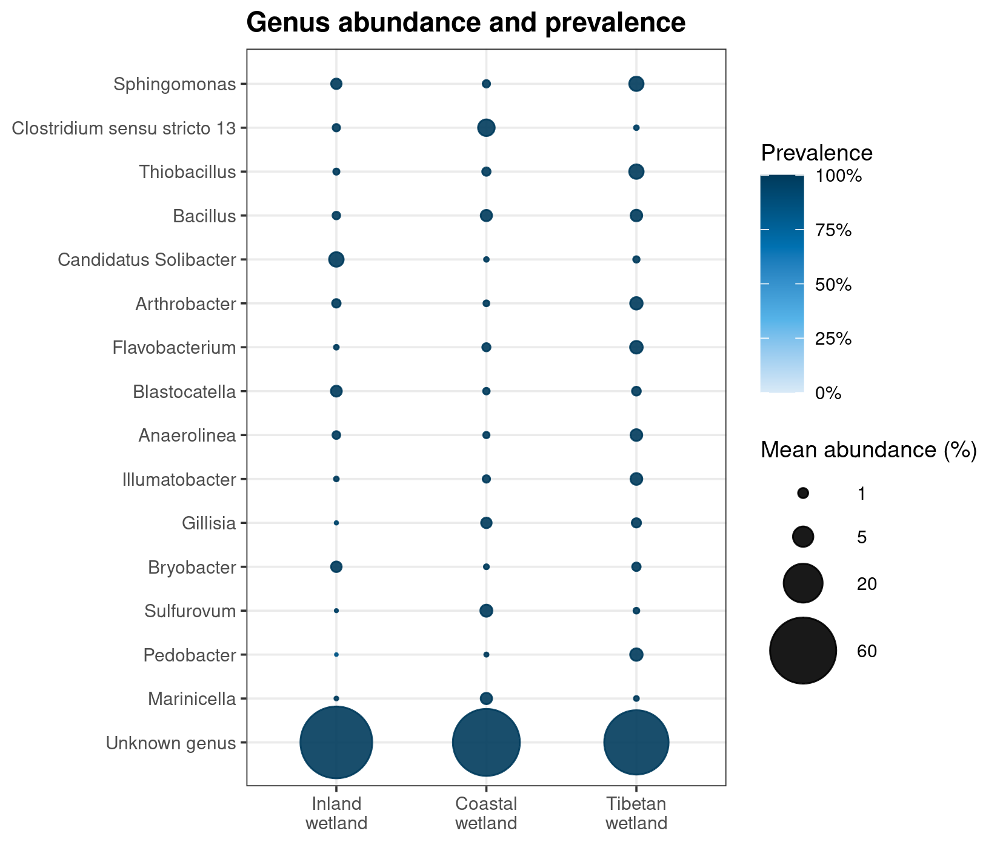
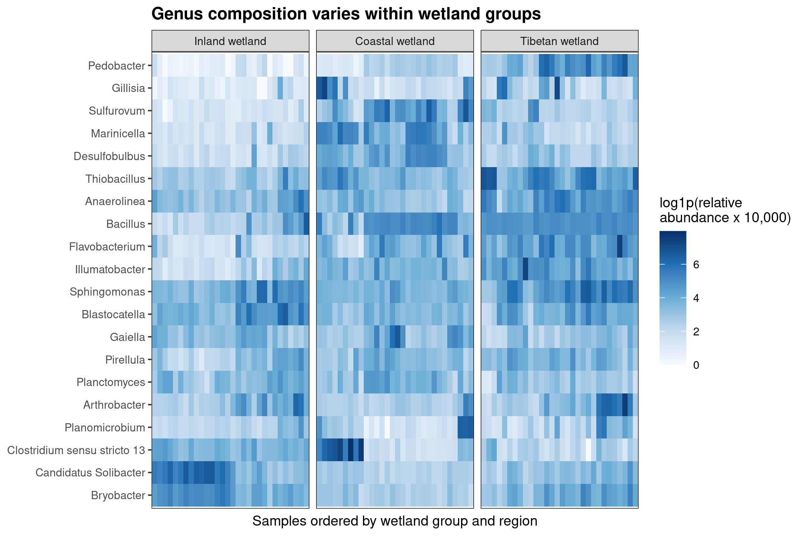
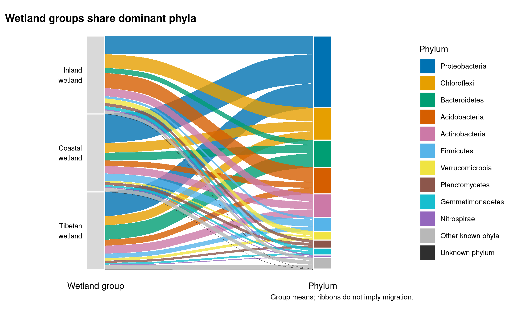

install.packages(c("ggplot2", "ggalluvial", "ragg", "svglite"))群落组成图：堆叠/气泡/冲积/热图
从样本组成开始，按问题选择图形
拿到一张丰度表后，通常先想知道：哪些类群占主导？不同组看起来有什么差别？这种差别是多数样本共有的，还是由少数样本拉高了均值？
这三个问题需要的图并不完全相同。先用样本级堆叠图交代整体组成，再根据问题选择气泡图或热图，通常比一开始就把所有图都画一遍更有帮助。冲积图适合作为组成摘要，不是必做项目。
以下使用 90 个湿地土壤样本，内陆、滨海和青藏高原湿地各 30 个。数据来自 An 等的湿地研究，随 microeco 提供。这里关心的是三类湿地的群落组成，以及组内样本是否一致。
提示选择组成图时，优先考虑这三点
- 先看样本，再看组均值；不要让一根平均柱隐藏组内差异。
- 分类层级取决于注释覆盖率，不是越细越好。未注释部分也属于样本组成。
- 相对丰度图用于描述。图上占比更高，不等于通过了差异检验，也不等于细胞数量更多。
下载并读取湿地示例数据
需要 R，以及 ggplot2、ggalluvial、ragg 和 svglite。下面使用的版本分别是 R 4.4.1、ggplot2 3.5.2、ggalluvial 0.12.5、ragg 1.3.2 和 svglite 2.1.3；后两个包用于导出图片。
首次使用时安装 R 包
先准备三张表：OTU count 表、分类表和样本信息表。它们对应同一批样本；下面的代码会下载并读取这些文件。
在一个新建的项目文件夹中运行：
library(ggplot2)
library(ggalluvial)
set.seed(20260726)
options(timeout = 300)
data_url <- paste0(
"https://raw.githubusercontent.com/petemeng/microbiome-best-practices/",
"f394362dda37f04fe62a5ba245cd00b94cbb84b9/data/small/"
)
dir.create("data/small", recursive = TRUE, showWarnings = FALSE)
for (file in c("otutab.tsv", "taxonomy.tsv", "metadata.tsv")) {
path <- file.path("data/small", file)
if (!file.exists(path)) download.file(paste0(data_url, file), path, mode = "wb")
}
otutab <- read.delim("data/small/otutab.tsv", row.names = 1, check.names = FALSE)
taxonomy <- read.delim("data/small/taxonomy.tsv", row.names = 1, check.names = FALSE)
metadata <- read.delim("data/small/metadata.tsv", row.names = 1, check.names = FALSE)otutab 的行是 OTU、列是样本；taxonomy 的行名对应 OTU ID，metadata 的行名对应样本 ID。不要依赖三个文件原来的排列顺序，先按 ID 对齐：
counts <- as.matrix(otutab)
stopifnot(
!anyDuplicated(rownames(counts)), !anyDuplicated(colnames(counts)),
setequal(rownames(counts), rownames(taxonomy)),
setequal(colnames(counts), rownames(metadata)),
all(is.finite(counts)), all(counts >= 0),
all(counts == round(counts)), all(colSums(counts) > 0)
)
taxonomy <- taxonomy[rownames(counts), , drop = FALSE]
metadata <- metadata[colnames(counts), , drop = FALSE]
dim(counts)
head(otutab[, 1:4], 3)
head(taxonomy[, c("Phylum", "Genus")], 3)
head(metadata[, c("Group", "Type")], 3)[1] 13628 90
S1 S2 S3 S4
OTU_4272 1 0 1 1
OTU_236 1 4 0 2
OTU_399 9 2 2 4
Phylum Genus
OTU_4272 p__Firmicutes g__
OTU_236 p__Chloroflexi g__
OTU_399 p__Proteobacteria g__
Group Type
S1 IW NE
S2 IW NE
S3 IW NE读入后应得到 13,628 个 OTU × 90 个样本。样本信息中的 IW、CW、TW 分别表示内陆、滨海和青藏高原湿地，各有 30 个样本。接下来把图内组名改为英文，并固定样本顺序：
group_codes <- c("IW", "CW", "TW")
group_labels <- c(IW = "Inland wetland", CW = "Coastal wetland", TW = "Tibetan wetland")
region_labels <- c(NE = "Northeast", NW = "Northwest", NC = "North China",
YML = "Yangtze middle-lower", SC = "Southern coast",
QTP = "Qinghai-Tibet Plateau")
metadata$SampleID <- rownames(metadata)
metadata$GroupDisplay <- factor(group_labels[metadata$Group], levels = group_labels)
metadata$Region <- unname(region_labels[metadata$Type])
sample_order <- metadata$SampleID[order(
metadata$GroupDisplay, metadata$Region,
as.integer(sub("^S", "", metadata$SampleID))
)]
table(metadata$GroupDisplay)
theme_set(theme_bw(base_size = 9, base_family = "sans") +
theme(panel.grid.minor = element_blank(),
plot.title = element_text(face = "bold"),
plot.caption = element_text(hjust = 0)))
Inland wetland Coastal wetland Tibetan wetland
30 30 30 先用堆叠图看清每个样本
门水平适合先交代这组数据的整体结构。把同一门的 OTU counts 相加，再除以各自样本的总 counts，便得到每个样本中各门的相对丰度。分母包含未注释的 reads。
先去掉 p__、g__ 这样的分类层级前缀，把未分类标签单独归入 Unknown，再把同一类群的 counts 相加：
clean_taxon <- function(x, rank) {
x <- sub("^[A-Za-z]__", "", trimws(as.character(x)))
missing <- is.na(x) | x == "" | tolower(x) %in% c("unassigned", "unclassified", "unknown", "na", "nan")
x[missing] <- paste("Unknown", tolower(rank))
x
}
aggregate_rank <- function(counts, taxonomy, rank) {
out <- rowsum(counts, clean_taxon(taxonomy[[rank]], rank), reorder = TRUE)
unknown <- paste("Unknown", tolower(rank))
if (!unknown %in% rownames(out)) {
out <- rbind(out, matrix(0, 1, ncol(out), dimnames = list(unknown, colnames(out))))
}
out[order(rownames(out)), , drop = FALSE]
}
sample_depths <- colSums(counts)
phylum_counts <- aggregate_rank(counts, taxonomy, "Phylum")
phylum_rel <- sweep(phylum_counts, 2, sample_depths, "/")
stopifnot(max(abs(colSums(phylum_rel) - 1)) < 1e-12)在所有样本上按平均相对丰度选出同一份 Top 10；其余已知门合为 Other known phyla，未注释部分单列。再把矩阵转成长表，每行对应一个“样本 × 类群”：
known_phyla <- setdiff(rownames(phylum_rel), "Unknown phylum")
known_order <- known_phyla[order(rowMeans(phylum_rel)[known_phyla], decreasing = TRUE)]
top10_phyla <- head(known_order, 10)
display_labels <- c(top10_phyla, "Other known phyla", "Unknown phylum")
display_group <- ifelse(rownames(phylum_rel) %in% top10_phyla, rownames(phylum_rel),
ifelse(rownames(phylum_rel) == "Unknown phylum",
"Unknown phylum", "Other known phyla"))
phylum_display <- rowsum(phylum_rel, display_group, reorder = FALSE)[display_labels, , drop = FALSE]
matrix_to_long <- function(x, value_name) {
out <- data.frame(Taxon = rep(rownames(x), ncol(x)),
SampleID = rep(colnames(x), each = nrow(x)), Value = as.vector(x))
names(out)[3] <- value_name
out
}
stack_data <- matrix_to_long(phylum_display, "RelativeAbundance")
stack_data$SampleID <- factor(stack_data$SampleID, levels = sample_order)
stack_data$Taxon <- factor(stack_data$Taxon, levels = rev(display_labels))
stack_data$Group <- metadata[as.character(stack_data$SampleID), "GroupDisplay"]
taxon_palette <- c(Proteobacteria = "#0072B2", Chloroflexi = "#E69F00",
Bacteroidetes = "#009E73", Acidobacteria = "#D55E00",
Actinobacteria = "#CC79A7", Firmicutes = "#56B4E9",
Verrucomicrobia = "#F0E442", Planctomycetes = "#8C564B",
Gemmatimonadetes = "#17BECF", Nitrospirae = "#9467BD",
"Other known phyla" = "#B8B8B8", "Unknown phylum" = "#2F2F2F")stack_plot <- ggplot(stack_data, aes(SampleID, RelativeAbundance, fill = Taxon)) +
geom_col(width = 1) +
facet_grid(~Group, scales = "free_x", space = "free_x") +
scale_fill_manual(values = taxon_palette, drop = FALSE) +
scale_y_continuous(labels = scales::label_percent(), expand = c(0, 0)) +
labs(title = "Phylum composition across 90 wetland samples",
x = "Samples ordered by wetland group and region", y = "Relative abundance", fill = "Phylum") +
theme(axis.text.x = element_blank(), axis.ticks.x = element_blank(),
panel.grid = element_blank(), legend.position = "right",
panel.spacing.x = grid::unit(1.5, "mm"))
stack_plot
组均值由每个样本的比例等权平均得到。下面的函数只按组取均值，不合并测序 reads：
group_mean <- function(x) {
sapply(group_codes, function(g) rowMeans(x[, metadata$Group == g, drop = FALSE]))
}
phylum_group_mean <- group_mean(phylum_display)
round(100 * phylum_group_mean[c("Proteobacteria", "Acidobacteria", "Bacteroidetes"), ], 2)先读优势类群，再读同组柱子之间的差别。Proteobacteria 在三组中都占较大比例，但滨海湿地的平均占比更高；Acidobacteria 在内陆湿地占比更高，Bacteroidetes 在青藏高原湿地占比更高。对应的样本平均值如下：
| 类群 | 内陆湿地 | 滨海湿地 | 青藏高原湿地 |
|---|---|---|---|
| Proteobacteria | 23.38% | 37.27% | 31.49% |
| Acidobacteria | 19.26% | 7.11% | 7.65% |
| Bacteroidetes | 6.52% | 10.07% | 18.36% |
这些均值帮助概括图形，但不能代替每个样本的柱子。即使属于同一类湿地，样本之间的比例也并不一致。若只画三根组均值柱，这部分信息就会消失。
门、属和种，应该画到哪一级？
想从门继续细化到属之前，先看有多少 reads 能被注释到那个层级。
rank_names <- c("Kingdom", "Phylum", "Class", "Order", "Family", "Genus", "Species")
rank_matrices <- setNames(lapply(rank_names, function(rank) {
sweep(aggregate_rank(counts, taxonomy, rank), 2, sample_depths, "/")
}), rank_names)
unknown_percent <- sapply(rank_names, function(rank) {
100 * mean(rank_matrices[[rank]][paste("Unknown", tolower(rank)), ])
})
round(unknown_percent[c("Phylum", "Genus", "Species")], 2)
top_n_sensitivity <- sapply(c(5, 8, 10, 15, 20), function(n) {
coverage <- colSums(phylum_rel[head(known_order, n), , drop = FALSE])
100 * c(Mean = mean(coverage), Minimum = min(coverage), Maximum = max(coverage))
})
colnames(top_n_sensitivity) <- paste0("Top", c(5, 8, 10, 15, 20))
round(top_n_sensitivity, 2)这组数据的结果是：
| 分类层级 | 每个样本未注释比例的平均值 | 对作图的影响 |
|---|---|---|
| 门 | 0.35% | 可以较完整地展示整体组成 |
| 属 | 63.11% | 只能描述已知属的局部结构，需说明未注释比例 |
| 种 | 99.63% | 不适合用物种组成概括这组样本 |
因此，这里用门水平做概览，再用属水平回答更具体的问题；并不把物种名更多当作分析更精细。
显示多少个类群，也由覆盖率和可读性共同决定。 门水平 Top 10 在各样本中平均覆盖 94.80% 的 reads，单样本为 86.52%–98.92%。若只画 Top 5，平均覆盖率降至 77.53%；增加到 Top 20 则为 98.48%，但图例更长。因此本例采用 Top 10，这不是所有数据都应使用的固定值。
图中的两个汇总类别要分开理解：
Other known phyla是已经注释到门、但没有进入 Top 10 的类群。Unknown phylum是没有注释到门的 reads，不能解释成一个新的门。
删除未注释部分，会改变百分比的含义
属水平尤其容易出现这个问题。内陆湿地平均有 71.01% 的 reads 未注释到属。如果先删掉它们，再让剩下的属加起来等于 100%，同一个 Candidatus Solibacter 会得到两种不同的组均值：
genus_rel <- rank_matrices[["Genus"]]
unknown_genus <- "Unknown genus"
known_genera <- setdiff(rownames(genus_rel), unknown_genus)
genus_order <- known_genera[order(rowMeans(genus_rel)[known_genera], decreasing = TRUE)]
top20_genera <- head(genus_order, 20)
top15_genera <- head(genus_order, 15)
ids <- metadata$SampleID[metadata$Group == "IW"]
known_fraction <- 1 - genus_rel[unknown_genus, ids]
stopifnot(all(known_fraction > 0))
denominator_sensitivity <- 100 * c(
AllReads = mean(genus_rel["Candidatus Solibacter", ids]),
ClassifiedReads = mean(genus_rel["Candidatus Solibacter", ids] / known_fraction)
)
round(denominator_sensitivity, 2)| 每个样本计算比例时的分母 | 内陆湿地的平均相对丰度 |
|---|---|
| 全部 reads | 2.38% |
| 仅已注释到属的 reads | 9.66% |
菌群没有因此发生变化，变化的是分母。若研究问题确实是“已知属内部如何分配”，第二种算法可以使用，但必须明确标为“已注释 reads 内的相对丰度”，并报告注释覆盖率。这里比较整体群落，后续属水平图仍以全部 reads 为分母。
比较组间组成：丰度和检出率分开看
堆叠图看过整体后，若想比较一批已知属在三组中的分布，可以用气泡图压缩信息。不过，先要决定“组均值”怎样计算。
当目标是概括一个组中样本的平均组成时，先算每个样本的相对丰度，再对样本等权平均。 不要先合并整组 counts：本例样本测序量相差三倍以上，先合并会让测序较深的样本权重更大。两种算法在门水平的单个组–类群比例上，最多相差 1.45 个百分点。
pooled_phylum <- sapply(group_codes, function(g) {
ids <- metadata$SampleID[metadata$Group == g]
weighted <- sweep(phylum_display[, ids, drop = FALSE], 2, sample_depths[ids], "*")
rowSums(weighted) / sum(sample_depths[ids])
})
round(100 * max(abs(phylum_group_mean - pooled_phylum)), 2)平均相对丰度回答“平均占多少”，检出率回答“多少样本中有检出”。这里把非零 count 视为检出；它是本次测序中的检出记录，不等于没有检出的样本中绝对不存在该类群。
shown_genera <- c(top15_genera, unknown_genus)
genus_means <- group_mean(genus_rel[shown_genera, , drop = FALSE])
genus_prevalence <- group_mean(genus_rel[shown_genera, , drop = FALSE] > 0)
bubble_data <- matrix_to_long(genus_means, "MeanRelativeAbundance")
bubble_data$MeanPercent <- 100 * bubble_data$MeanRelativeAbundance
bubble_data$Prevalence <- as.vector(genus_prevalence)
bubble_data$Group <- factor(group_labels[bubble_data$SampleID], levels = group_labels)
bubble_data$Taxon <- factor(bubble_data$Taxon, levels = rev(shown_genera))bubble_plot <- ggplot(bubble_data, aes(Group, Taxon, size = MeanPercent, colour = Prevalence)) +
geom_point(alpha = 0.9) +
scale_size_area(max_size = 13, breaks = c(1, 5, 20, 60)) +
scale_y_discrete(expand = expansion(add = c(1, 0.8))) +
scale_colour_gradientn(colours = c("#D9EAF7", "#56B4E9", "#0072B2", "#003B5C"),
limits = c(0, 1), labels = scales::label_percent()) +
scale_x_discrete(labels = c("Inland wetland" = "Inland\nwetland",
"Coastal wetland" = "Coastal\nwetland",
"Tibetan wetland" = "Tibetan\nwetland")) +
labs(title = "Genus abundance and prevalence", x = NULL, y = NULL,
size = "Mean abundance (%)", colour = "Prevalence") +
theme(legend.position = "right")
bubble_plot
圆的面积表示平均丰度，颜色表示检出率。例如，Candidatus Solibacter 在内陆、滨海和青藏高原湿地的平均相对丰度分别为 2.38%、0.12% 和 0.31%，但三组的检出率都是 100%。这里的区别主要是占比，不是“某一组有、另一组没有”。
这张图里，多数优势属的检出率都很高，因此颜色提供的额外信息有限，阅读重点是圆的面积。若自己的数据中检出率几乎没有差异，也可以改用点图或条形图展示均值，并另加样本分布。
Unknown genus 的大圆汇总了许多未注释到属的 OTU，不是一个优势菌属。如果它使其他圆点太小，可另画已知属的局部图，并在图注保留未注释比例；不要为了让圆点变大而悄悄换掉分母。
组内是否一致，要回到样本级热图
气泡图省去了样本维度，因此还不能回答“组均值是否代表大多数样本”。这个问题适合用热图继续看：每列一个样本，每行一个属，同组样本相邻排列。
这里展示平均丰度最高的 20 个已知属。相对丰度经过 log1p(相对丰度 × 10,000) 变换后用于着色，让低丰度部分更容易分辨。这个变换只影响显示；不把选中的 20 个属重新归一化到 100%。
heatmap_matrix <- log1p(10000 * genus_rel[top20_genera, sample_order, drop = FALSE])
row_order <- rownames(heatmap_matrix)[hclust(dist(heatmap_matrix), method = "complete")$order]
heatmap_data <- matrix_to_long(heatmap_matrix, "Log1pAbundance")
heatmap_data$SampleID <- factor(heatmap_data$SampleID, levels = sample_order)
heatmap_data$Taxon <- factor(heatmap_data$Taxon, levels = rev(row_order))
heatmap_data$Group <- metadata[as.character(heatmap_data$SampleID), "GroupDisplay"]
heatmap_plot <- ggplot(heatmap_data, aes(SampleID, Taxon, fill = Log1pAbundance)) +
geom_tile() +
facet_grid(~Group, scales = "free_x", space = "free_x") +
scale_fill_gradientn(colours = c("#F7FBFF", "#C6DBEF", "#6BAED6", "#2171B5", "#08306B")) +
labs(title = "Genus composition varies within wetland groups",
x = "Samples ordered by wetland group and region", y = NULL,
fill = "log1p(relative\nabundance x 10,000)") +
theme(axis.text.x = element_blank(), axis.ticks.x = element_blank(),
panel.grid = element_blank(), panel.spacing.x = grid::unit(1.5, "mm"))
heatmap_plot
ids <- metadata$SampleID[metadata$Group == "TW"]
round(100 * c(Mean = mean(genus_rel["Pedobacter", ids]),
Minimum = min(genus_rel["Pedobacter", ids]),
Maximum = max(genus_rel["Pedobacter", ids])), 2)例如，Pedobacter 在青藏高原湿地的平均相对丰度为 1.66%，但单个样本从 0.09% 到 7.96% 不等。气泡图只能给出一个平均圆点，热图中的深浅变化则提醒我们：同组样本并不是同样高。
这里的列按湿地类型、地区和样本编号排列，便于直接比较已知分组；行按变换后的丰度轮廓做欧氏距离、complete-linkage 聚类，让分布相似的属相邻。聚类样本列也可以用于探索，但不能把聚类后形成的色块再当作独立证据证明组间差异。
颜色越深代表变换后的数值越大，不是线性倍数。若目标是精确比较某一个属的丰度，应再画这个属的样本散点图或箱线图，而不是从热图色阶估算倍数。
冲积图适合做组成摘要，不表示菌群流动
如果需要在一张图里连接“湿地类型”和“主要门”，可以把前面的组均值画成冲积图。这里每个湿地块的总高度相同，连带的宽度表示相应门在该组的平均相对丰度。
flow_data <- matrix_to_long(phylum_group_mean, "MeanRelativeAbundance")
flow_data$Group <- factor(group_labels[flow_data$SampleID], levels = group_labels)
flow_data$Taxon <- factor(flow_data$Taxon, levels = display_labels)
alluvial_plot <- ggplot(flow_data, aes(y = MeanRelativeAbundance, axis1 = Group, axis2 = Taxon)) +
geom_alluvium(aes(fill = Taxon), width = 0.08, alpha = 0.8) +
geom_stratum(aes(fill = after_stat(stratum)), width = 0.08, colour = "white") +
geom_text(stat = "stratum",
aes(label = after_stat(ifelse(x == 1, sub(" wetland", "\nwetland", stratum), ""))),
size = 2.5, hjust = 1, nudge_x = -0.06) +
scale_x_discrete(limits = c("Wetland group", "Phylum"), expand = c(0.35, 0.05)) +
scale_fill_manual(values = c(taxon_palette, setNames(rep("grey85", 3), group_labels)),
breaks = display_labels, name = "Phylum") +
labs(title = "Wetland groups share dominant phyla",
caption = "Group means; ribbons do not imply migration.") +
theme_void(base_family = "sans", base_size = 9) +
theme(legend.position = "right", plot.title = element_text(face = "bold"),
axis.text.x = element_text(), plot.margin = margin(10, 5, 10, 5))
alluvial_plot
这张图重述了堆叠图中的优势组成：不同湿地类型分配给 Proteobacteria、Acidobacteria 和 Bacteroidetes 的比例不同。右端每个门的总高度是三个组均值之和，不是全部样本中的总细胞数。
连带很容易让人联想到迁移或演替，但这里没有追踪菌群从一个湿地进入另一个湿地，也没有时间序列。它只是组成分配的视觉摘要。如果堆叠图已经把问题讲清楚，就不必再加一张冲积图。
按论文尺寸保存四张图
屏幕中的绘图窗口会随拖动而改变尺寸。导出时明确指定宽、高：气泡图宽 140 mm，其余图宽 183 mm。下面同时保存 PDF、SVG 矢量文件和 600 ppi 的 PNG、TIFF：
plots <- list("26-phylum-stacked" = stack_plot, "26-genus-bubble" = bubble_plot,
"26-genus-heatmap" = heatmap_plot, "26-group-phylum-alluvial" = alluvial_plot)
plot_sizes <- data.frame(width = c(183, 140, 183, 183), height = c(112, 118, 122, 112),
row.names = names(plots))
devices <- list(pdf = grDevices::cairo_pdf, svg = svglite::svglite,
png = ragg::agg_png, tiff = ragg::agg_tiff)
dir.create("figures", showWarnings = FALSE)
for (name in names(plots)) {
for (format in names(devices)) {
args <- list(filename = file.path("figures", paste0(name, ".", format)),
plot = plots[[name]], device = devices[[format]],
width = plot_sizes[name, "width"], height = plot_sizes[name, "height"],
units = "mm", dpi = 600, bg = "white")
if (format == "tiff") args$compression <- "lzw"
do.call(ggsave, args)
}
}用于计算的相对丰度也一并保留。下面两张表没有 Top-N 折叠，也没有热图的对数变换：
dir.create("results/26-community-composition", recursive = TRUE, showWarnings = FALSE)
write.table(phylum_rel, "results/26-community-composition/reader-phylum-relative.tsv",
sep = "\t", quote = FALSE, col.names = NA)
write.table(genus_rel, "results/26-community-composition/reader-genus-relative.tsv",
sep = "\t", quote = FALSE, col.names = NA)也可以下载完整 R 脚本，在准备好上述 R 包后按顺序运行。数据下载、计算和作图均包含在脚本中。
常见误判：把组成差别写成了生物学结论
注意占比更高，不等于数量更多，也不等于显著富集
本例可以写“滨海湿地中 Proteobacteria 的平均相对丰度为 37.27%，高于内陆湿地的 23.38%”。不能仅凭这张图写“Proteobacteria 显著富集”或“菌量增加”。
显著性需要与研究设计匹配的差异分析，并处理协变量、重复测量和多重检验；绝对数量则需要总菌量或其他绝对定量信息。一个类群的相对占比上升，也可能是其他类群减少所致。
Top 10、Top 15 和 Top 20 都只是本例的显示选择。不能因为某个属没有进入图例，就把它从差异分析候选中删除；只在少数样本或某一组出现的类群，可能并不具有很高的全体平均丰度。
在图注和方法中说明比例是怎样算的
一张组成图至少要让读者知道：使用哪个分类层级、展示哪些类群、未注释部分如何处理、分母是什么，以及画的是样本值还是组均值。气泡图还要说明检出阈值，热图还要说明变换和排序方式。
对应这次分析，可以这样描述：
Counts were aggregated by taxonomic rank and divided by each sample’s total read count, including unclassified reads. Known taxa were ranked by their mean relative abundance across all 90 samples. The phylum plot displayed the top 10 known phyla, with remaining known phyla combined as Other and unclassified reads shown separately. Group means used equal sample weights. The genus bubble plot displayed the top 15 known genera and the unclassified fraction; prevalence was the proportion of samples with non-zero counts. The heatmap displayed the top 20 known genera after log1p(relative abundance × 10,000) transformation. Rows were clustered using Euclidean distance and complete linkage; columns were ordered by wetland group, region, and sample ID. All plots were descriptive.
换用自己的分组和样本时，哪些选择需要重做？
输入仍是 OTU/ASV count 表、分类表和样本信息表。先确认 feature 与样本 ID 能正确对齐，再选择自己的分组列；不要把测序文件数当成生物学样本数。
如果一个生物学样本测了多个技术库，应先确认分组、采样时间等信息一致，再合并技术库 counts。来自同一人的不同时间点不是技术重复，不能这样合并；需要按时间点展示，后续推断也要处理受试者内相关性。
更换数据后，分类层级、Top-N 和检出阈值需要重新检查；样本顺序中的湿地/地区字段也要换成自己的分组，颜色表要使用实际出现的类群名称。若门水平已经有很高的未注释比例，应先查注释结果；若 Top 10 只覆盖少量 reads，可以增加显示类群，或改用更合适的层级。不同组仍应使用同一份类群清单和同一套颜色。
最终选择哪张图，取决于还需要回答什么：整体组成用堆叠图；组间的均值与检出率用气泡图；样本内部差异用热图。冲积图只有在确实让组成关系更清楚时再加入。
分类表只有一列时拆分为七级
如果分类字符串按 Kingdom 到 Species 固定顺序排列，可在读入后、聚合前拆分；若字符串会跳过中间层级，则应按 k__、p__ 等前缀识别层级。
parts <- strsplit(as.character(taxonomy$Taxon), ";", fixed = TRUE)
taxonomy_split <- t(vapply(parts, function(x) {
length(x) <- 7L
trimws(x)
}, character(7)))
colnames(taxonomy_split) <- c("Kingdom", "Phylum", "Class", "Order", "Family", "Genus", "Species")
rownames(taxonomy_split) <- rownames(taxonomy)
taxonomy <- as.data.frame(taxonomy_split)参考
- An J, Liu C, Wang Q, et al. Soil bacterial community structure in Chinese wetlands. Geoderma. 2019;337:290–299. doi:10.1016/j.geoderma.2018.09.035.
- Liu C, Cui Y, Li X, Yao M. microeco: an R package for data mining in microbial community ecology. FEMS Microbiology Ecology. 2021;97:fiaa255. doi:10.1093/femsec/fiaa255.
- Gloor GB, Macklaim JM, Pawlowsky-Glahn V, Egozcue JJ. Microbiome datasets are compositional: and this is not optional. Frontiers in Microbiology. 2017;8:2224. doi:10.3389/fmicb.2017.02224.
- McLaren MR, Willis AD, Callahan BJ. Consistent and correctable bias in metagenomic sequencing experiments. eLife. 2019;8:e46923. doi:10.7554/eLife.46923.
- Wickham H. ggplot2: Elegant Graphics for Data Analysis. 2nd ed. Springer; 2016. ggplot2 documentation.
- Brunson JC. ggalluvial: Layered Grammar for Alluvial Plots. 包文档与作图方法.